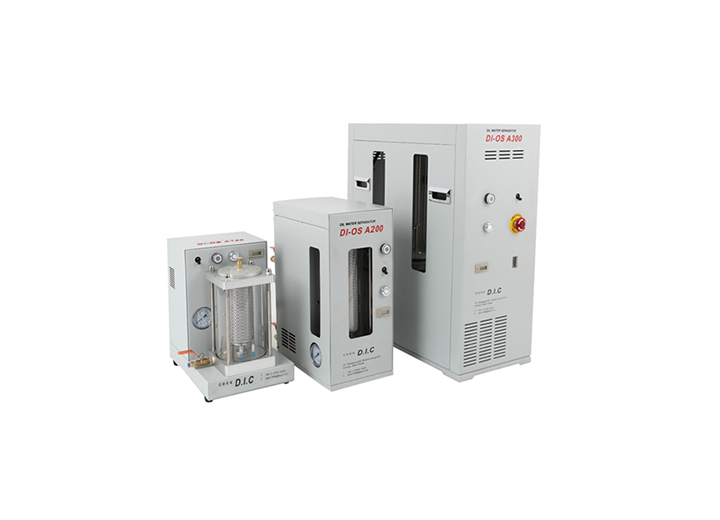

유수분리기는 오일진공펌프의 작동불량의 원인이 되는 유중의 수분을 효과적으로 제거하여 설비의 가동효율을 높이는 장치입니다.
유중에 수분을 포함하고 있으면, 그 물이 금속 표면에 부착해 금속을 녹슬고, 녹을 기름 중에 방출하는 것에 의해, 촉매가 되어 기름의 산화 변질을 가속시켜 버립니다.
수분이 있기 때문에 기름의 산화 속도는 수십 배, 수백 배로 가속되어 일반적인 슬러지 보다 훨씬 유해한 것이 되어 버리는 것입니다.
이러한 문제를 해결하기 위해 당사는 수분을 분리하는 장치를 권장드립니다.
오일 중의 수분을 효과적으로 제거하여 설비의 가동률을 안정적으로 유지합니다.
* A-300 모델 GHP-3500D , GHP-6000D 권장드립니다.